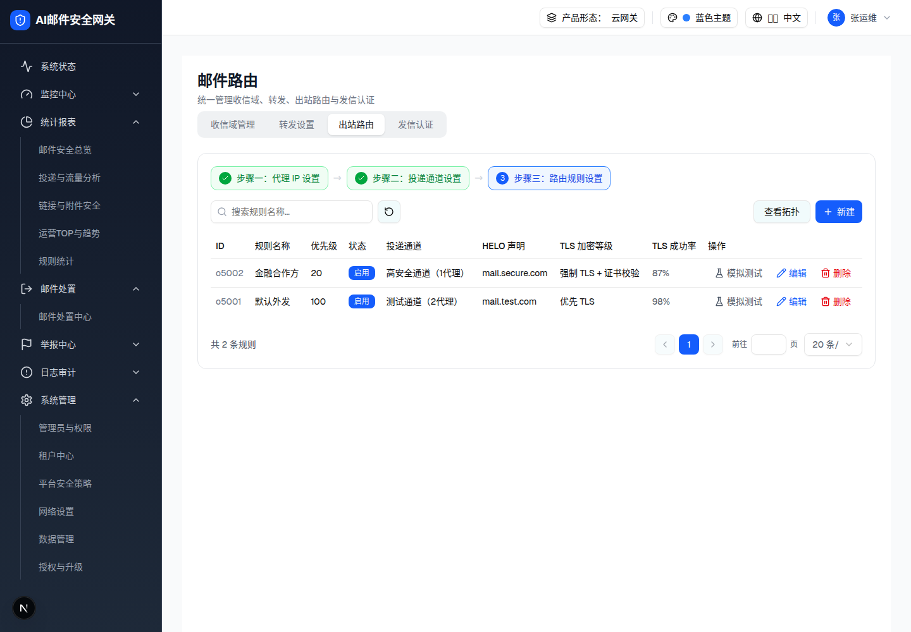
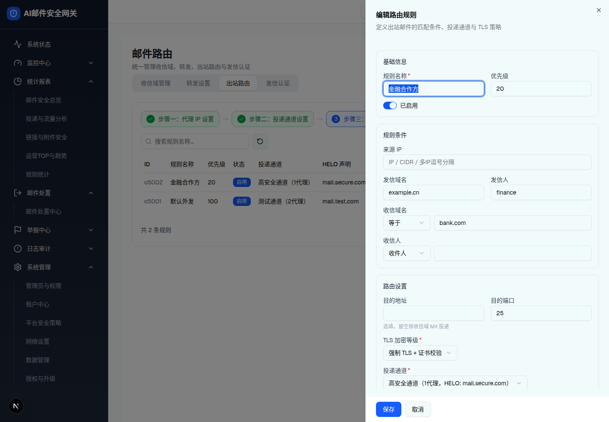
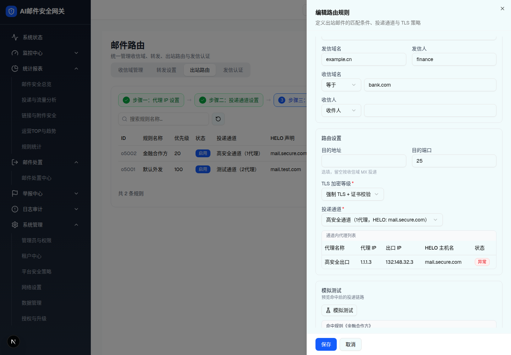
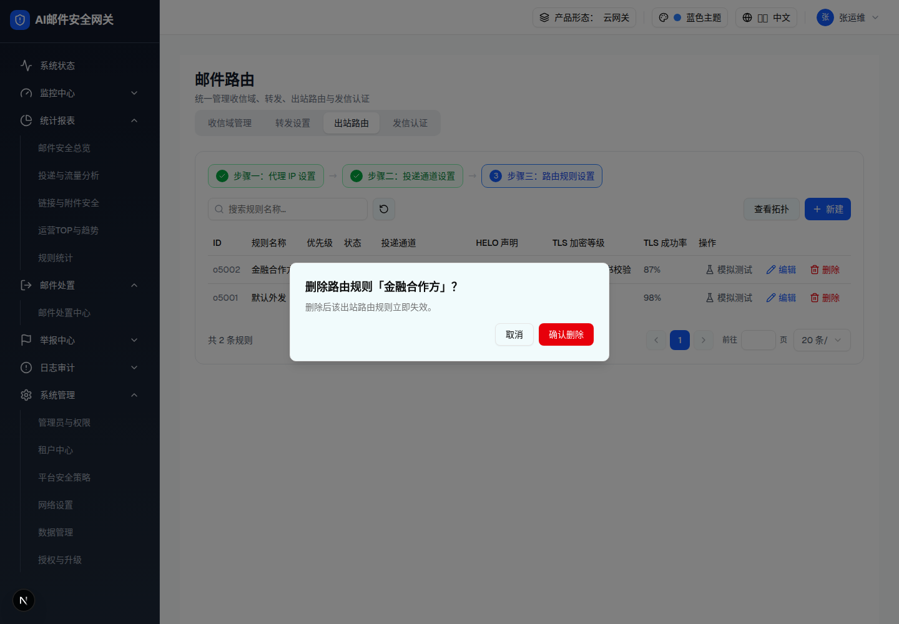

| 所属组件 | 2.5 出站路由 Tab · 步骤三 |
| 触发路径 | 步骤条「步骤三：路由规则设置」→ 规则列表（按优先级升序）；「新建 / 编辑 / 模拟测试」→ 抽屉；「删除」→ #delete |
预览可操作：搜索过滤规则名称；「查看拓扑」按钮 → Toast「拓扑视图：路由规则 → 投递通道 → 代理 IP（仅查看）」（demo 仅 Toast，无拓扑页，工具栏此按钮为路由规则步骤特有）；「模拟测试 / 编辑」在本页 7b 展示。
| ID | 规则名称 | 优先级 | 状态 | 投递通道 | HELO 声明 | TLS 加密等级 | TLS 成功率 | 操作 |
|---|---|---|---|---|---|---|---|---|
| o5002 | 金融合作方 | 20 | 启用 | 高安全通道（1代理） | mail.secure.com | 强制 TLS + 证书校验 | 87% | |
| o5001 | 默认外发 | 100 | 启用 | 测试通道（2代理） | mail.test.com | 优先 TLS | 98% |

| 列 | 规格（浏览器实测） |
|---|---|
| ID / 规则名称 / 优先级 | o5001…；font-medium；升序排序 |
| 状态 | StatusBadge；引用通道已被删除时整列替换为橙色「通道失效」outline 徽章（channelInvalid 条件渲染） |
| 投递通道 | 「默认通道」或「名称（N代理）」；通道不可用 →「通道不可用」 |
| HELO 声明 | 取通道内第一个代理的 HELO（空→系统默认）；默认通道→「系统默认」 |
| TLS 加密等级 | 明文传输 / 优先 TLS / 强制 TLS / 强制 TLS + 证书校验 |
| TLS 成功率 | 「N%」；仅 tlsLevel=force 且 <90% 时橙色 + AlertTriangle 图标 |
| 操作（w-200px） | 「模拟测试」/「编辑」/「删除」（前两者同为 openEdit，§9-D5） |
| 比对项 | demo 实际 DOM | 嵌入的 HTML | 是否一致 |
|---|---|---|---|
| 行序 | o5002(20) 在 o5001(100) 前（升序） | 同 | 一致 |
| 87% 单元格 | text-gray-600 无警告图标（forceVerify 不告警） | 同 | 一致 |
| 工具栏 | 「查看拓扑」outline + 「新建」蓝底，无筛选 | 同 | 一致 |
| 节点数 | 123 | 123 | 一致 |
预览可操作：清空全部条件字段 → 顶部出现「未设置任何条件，将作为兜底规则（全匹配）」橙色警告；目的地址填公网 IP（如 8.8.8.8）+ TLS 等级选「明文传输」→ 公网明文警告；填 127.0.0.1 → 红字「目的地址不能与网关本地地址相同」；投递通道 Select 切换（默认通道 → 无代理预览表；具体通道 → 展示「通道内代理列表」）；「模拟测试」按当前草稿生成树状投递链路。


| 字段 | 规格（浏览器实测） |
|---|---|
| 规则名称 * / 优先级 / 启停 | 必填「请输入规则名称」；number 默认 100；Switch |
| 规则条件（全选填） | 来源 IP（「IP / CIDR / 多IP逗号分隔」）/ 发信域名 / 发信人（占位「发信域名或发信人」）/ 收信域名（匹配方式 包含·等于·正则匹配 + 值）/ 收信人（匹配域 收件人·抄送·密送 + 值）；全部为空 → 兜底规则橙色警告，保存放行 + Toast「当前规则未设置条件，将作为兜底规则，请确认优先级设置」 |
| 目的地址 / 目的端口 | 选填，hint「留空按收信域 MX 投递」；回环拦截红字（127.0.0.1 / localhost / mail.gateway.local）；端口 1-65535 |
| TLS 加密等级 * | Select 四档：明文传输 / 优先 TLS（默认）/ 强制 TLS / 强制 TLS + 证书校验；forceVerify + 通道内存在 TLSv1.0/1.1 代理 → 橙色冲突提示「当前代理 IP 允许的 TLS 最低版本为 X，与「证书校验」的高安全策略存在差距，建议提升至 TLSv1.2。」；plain + 公网目的 IP（非 10./192.168.）→ 「当前规则对公网地址使用明文传输，存在数据泄露风险，建议使用「优先 TLS」。」 |
| 投递通道 * | Select：「默认通道」+ 各通道「名称（N代理，HELO: 值）」；选具体通道且有代理 → 条件渲染「通道内代理列表」预览表（代理名称/代理 IP/出口 IP/HELO/探测状态徽章） |
| 模拟测试 | desc「预览命中后的投递链路」；结果为 pre 等宽树状文本（命中规则/通道/代理+出口/HELO/TLS 策略/预计对端响应 250 2.0.0 Ok）；基于当前草稿而非列表匹配（与转发模拟器不同） |
| 底部操作 | 「保存」/「取消」；成功 Toast「路由规则已添加/已更新」 |
| 比对项 | demo 实际 DOM | 嵌入的 HTML | 是否一致 |
|---|---|---|---|
| SectionCard 数 | 4（基础信息 / 规则条件 / 路由设置 / 模拟测试） | 4 | 一致 |
| 通道内代理列表 | 条件渲染表，1 行（高安全出口，探测「异常」红徽章） | 同 | 一致 |
| 模拟结果 | pre.font-mono.whitespace-pre-wrap 六行树状文本 | 同 | 一致 |
| 兜底警告 | 未渲染（编辑行有条件，noCondition=false） | 同（未包含） | 一致 |
| 节点数 | 110（无模拟结果态 109） | 110 | 一致 |
预览可操作：「取消」/「确认删除」→ Toast「路由规则已删除」。
删除后该出站路由规则立即失效。

| 比对项 | demo 实际 DOM | 嵌入的 HTML | 是否一致 |
|---|---|---|---|
| 标题动态名 | 「金融合作方」 | 同 | 一致 |
| 节点数 | 7 | 7 | 一致 |